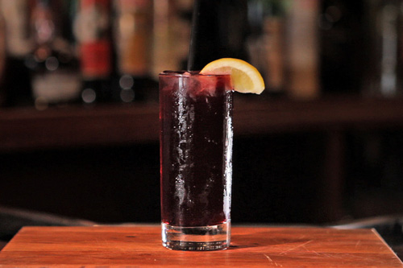

Wine and Cola? It Works
Kalimotxo: A Poor Man's Sangria
Some might consider the kalimotxo (pronounced cal-ee-MO-cho) a guilty pleasure; I’ve received more than a few skeptical glances when I’ve ordered it at bars in New York. But I don’t feel an iota of contrition when I drink this Basque-country classic. It couldn’t be easier: equal parts red wine (some say the cheaper the better, but that’s up to you) and cola. I like a squeeze of lemon juice for a little brightness, and maybe a slice of lemon or orange to dress it up. But purists might consider even those modest additions a little fussy. The overall effect is surprisingly sangria-esque, minus all that fruit-chopping and waiting, and wonderfully refreshing.

If you can find cola made with cane sugar rather than corn syrup, all the better, but the drink is still fine with whatever you’ve got on hand. The soda’s caffeine actually makes the kalimotxo a fine pick-me-up: an ideal afternoon drink when you know you’ve still got a long day, and night, ahead.
In a glass filled with ice, combine 3 or 4 ounces dry red wine (preferably Spanish) with an equal amount of cola and 1 squeeze lemon juice. Garnish with a lemon or orange slice to serve.
(Article from: http://www.nytimes.com/2013/05/22/dining/wine-and-cola-it-works.html)